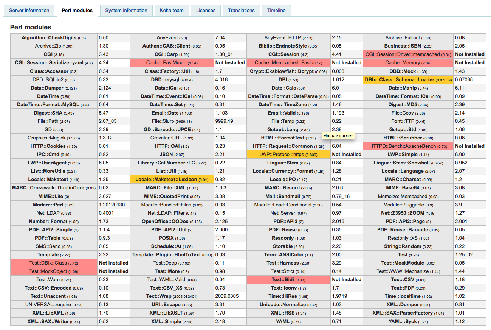

关于 Koha
关于 Koha 部分将提供服务器的重要信息以及 Koha 系统的信息。
在这里： 更多 > 关于 Koha
服务器信息
在 服务器信息 分页有关于 Koha 软件版本以及服务器硬件的信息。该信息对于调试系统非常重要。向维护人员或支持厂商（邮件列表、聊天室等）汇报问题时，最好提供本分页的信息。时区由 Koha 或者服务器配置。更多相关时区信息参考 https://wiki.koha-community.org/wiki/Time_Zone_Configuration

Perl 模块
要利用所有 Koha 功能，请及时更新您的 Perl 模块。Perl 模块 分页显示 Koha 必备模块，包括已安装及需要更新的模块。

粗体项为 Koha 必备，红色项未安装，黄色项需更新。
系统信息
本分页提供系统设置错误或者未能完整设置的信息